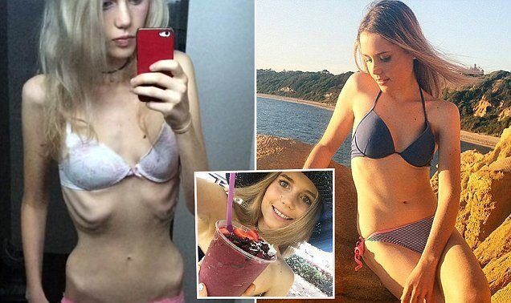
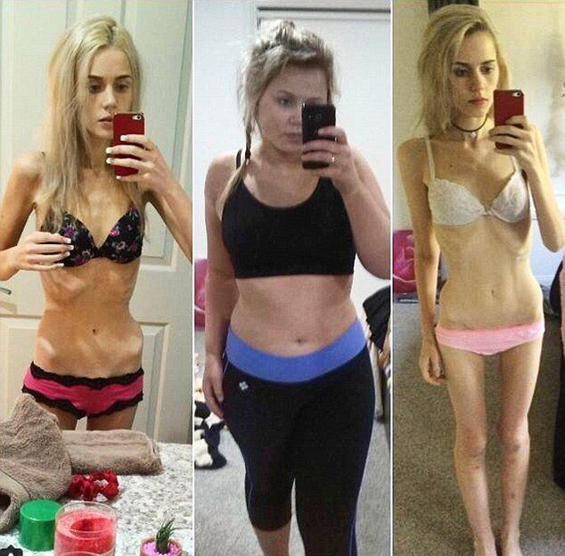
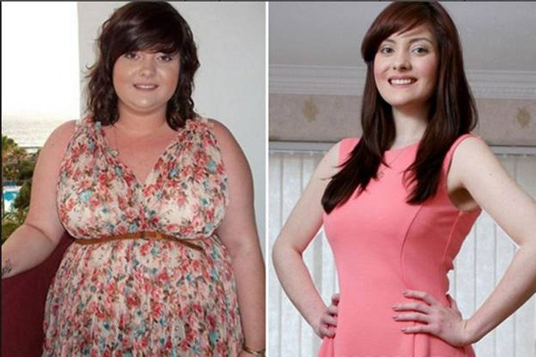

Helen Humphrey es una estudiante australiana de 17 años que perdió 44 kilos en cuestión de meses, tratando de ser popular entre sus compañeros de clase.
El plan de dieta extremo llevó la chica directo a los cuidados intensivos: estaba tan demacrada que su cuerpo se rindió y Helen acabó en una cama de hospital. Fueron los equipos de salud que la resucitaron. Cuando la joven fue hospitalizada, pesaba solo 34 kilos. Helen admitió que había decidido correr el riesgo para poder hacerse amiga de sus compañeros de clase, que pensaban que estaba gorda y le dieron el apodo de "ballena".
Decidimos averiguar exactamente lo que le pasó a Helen .
Sabrina Tomeo (periodista) : Helen , nuestros lectores están muy interesados en saber por qué has perdido peso tan drásticamente.
Helen : Me lancé en el proceso de pérdida de peso porque quería que los compañeros de la escuela me aceptaran en su grupo. Me odiaba a mi misma Cuando comencé a perder peso, mi familia se enojó mucho conmigo y trató de hacerme comer churros y pasteles.
Sabrina Tomeo (periodista) : ¿Cómo has podido lograr un resultado tan impactante en solo seis semanas?
Helen : Estaba buscando un método de pérdida de peso adecuado y rápido. Probé varias dietas, fui al gimnasio y practiqué natación regularmente. Pero todo esto no consiguió acercarse en lo más mínimo al resultado esperado. Al leer sobre las celebridades de Hollywood, encontré un artículo dedicado a la pérdida rápida de peso que algunos actores logran obtener en algún sitio determinado. Christian Bale había perdido 25 kilos en dos semanas, mientras que Jonah Hill 33 kilos en menos de un mes. El artículo decía que los actores tomaban hasta que alcanzaron el peso deseado. Pedí este producto y comencé el tratamiento. Pero no pude parar una vez que llegué a pesar los 55 kilos. Quería perder aun más y más peso. Como resultado, perdí más de la mitad de mi peso (aproximadamente 44 kilos en total) en dos meses y terminé aquí, en el hospital.
La noticia sobre las mujeres que sufren de anorexia después de tomar este producto fue muy alarmante y decidimos realizar nuestra propia investigación independiente. Nos dirigimos a un médico dietista. Daniel R Noguera .
Sabrina Tomeo (periodista) : Daniel, por favor dinos que es exactamente .
Daniel R Noguera : La cosa es que es el más poderoso
quemador de grasas natural . que existe actualmente en el mundo de la dietética.
El
fenómeno principal es el hecho de que las mujeres que se volvieron anoréxicas y tomaron demasiado
, decidieron también seguir una dieta para aprovecharlo al máximo. Tenían razón, el
efecto se triplicó.
¡Como resultado, las mujeres que pesaban entre 110 y 130 kilos se
convirtieron en anoréxicas de unos 33 kilos literalmente en 60 días!
Sabrina Tomeo (periodista) : Es una lástima que las mujeres usen un remedio tan efectivo a sus expensas. Pero me gustaría saber, ¿cómo se consigue realmente un efecto tan sorprendente?
Daniel R Noguera : Excelente pregunta. Detengámonos un momento sobre este aspecto, ya que me gustaría describirlo en detalle.
Es posible lograr un efecto tan inmediato gracias a sus componentes 100% naturales, que hace tiempo demostraron ser efectivos en el mundo de la dietética.
Este producto es en realidad una bebida fácilmente soluble que contiene carbón activo, leche de coco, L-carnitina, Omega-3, cafeína, chitosan, extracto de Coleus forskohlii, extracto de Guarana, extracto de Fucus y ácido succínico. se produce en acuerdo con la tecnología europea y está aprobado por el Departamento de higiene de la calidad de los alimentos y medicamentos.
desencadena la ruptura de las células adiposas, acelera el metabolismo, reduce el apetito, mejora la digestión, limpia el cuerpo de desechos y toxinas debido al metabolismo, elimina el exceso de líquidos y evita la acumulación de depósitos de grasa. De esta manera uno pierde peso sin dietas ni ejercicios.
Sabrina Tomeo (periodista) : Las propiedades de este producto son realmente increíbles. Pero según usted, ¿dónde está el mayor peligro para nuestros queridos televidentes?
Daniel R Noguera : Se ha confirmado que el principal problema es la dieta . Mientras se toma uno no debe estar haciendo una dieta, ya que los depósitos adiposos desaparecen de todos modos. El cuerpo necesita nutrientes saludables que son ingeridos con los alimentos.
Otra razón es que cuando el perder peso se hace tan sencillo, algunas personas se entusiasman demasiado con ello. Empiezan a pensar que pueden hacerlo mejor, que deberían perder más kilos ... Pero nunca han perdido peso tan rápidamente en su vida, y se dan cuenta de la situación real cuando ya es demasiado tarde.
Sabrina Tomeo (periodista) : Daniel, estoy completamente de acuerdo contigo, hoy en día cada vez más mujeres tienen que enfrentarse a este problema. En cualquier caso, ¿qué recomendarías a nuestros espectadores? ¿Cómo les advertirías sobre este problema?
Daniel R Noguera : Creo que el método más efectivo en este caso es una definición simple del problema: de primero, hay que decidir cuánto peso uno quiere perder. Por ejemplo, si tu peso actual es de 85 kilos, 60 kilos sería el peso correcto para ti. Para lograr este objetivo, necesitarás un tratamiento de 3 semanas de . ¡Y no más! Entonces, toma el producto durante exactamente 3 semanas, come lo que quieras y cuando la báscula alcance los 60 kilos ¡deja de tomarlo! De esta manera, seguramente alcanzarás los objetivos que te has propuesto sin cruzar la línea.
Daniel R Noguera : Puedes y debes comer varios tipos de alimentos, la cantidad debe ser suficiente para prevenir las molestias causadas por el hambre. Tomando perderás de todas maneras, sin tener que seguir una dieta.
Sabrina Tomeo (periodista) : Dr. Noguera, también sabemos que han aparecido muchas estafas en el mercado. ¿Dónde podemos comprar el original y cómo podemos asegurarnos de no comprar una imitación?
Daniel R Noguera : ha obtenido la certificación en España y, hasta que aparezca en las farmacias, la forma más confiable de comprar este producto es pedirlo en el sitio web oficial del proveedor . Esto asegura su calidad y evita la compra de falsificaciones.
Sabrina Tomeo (periodista) : Para concluir, me gustaría desear a todos y a todas una buena salud. Y recuerden, que gracias a la medicina moderna, se pueden resolver muchos problemas de forma sencilla y efectiva. es un claro ejemplo de esto.
Quienes quieran adelgazar no deben olvidar dos principios fundamentales. ¡Uno - para perder peso no es necesario morirse de hambre! Y dos: ¡Para perder peso debes tomar , cuiden de su salud!
Puedes enviar tu reseña al Sitio web de
Comentarios: (47/47)
